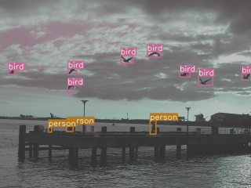
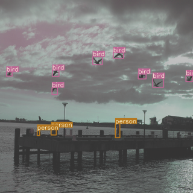
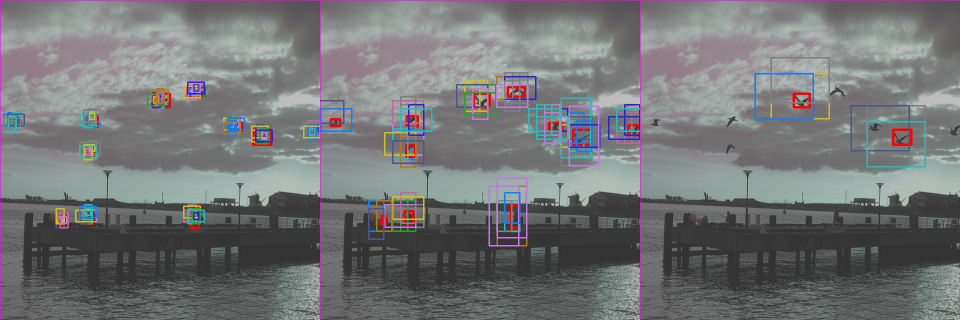

Visualize the anchor-target assignment¶
[1]:
import os
import random
from pathlib import Path
import numpy as np
import torch
os.environ["CUDA_DEVICE_ORDER"]="PCI_BUS_ID"
os.environ["CUDA_VISIBLE_DEVICES"]="4"
device = torch.device('cpu')
[2]:
# Deterministic REPRODUCIBILITY
torch.manual_seed(24)
random.seed(5)
np.random.seed(95)
[3]:
import io
import contextlib
import cv2
from torchvision.ops import box_convert
[4]:
from yolort.data import COCODetectionDataModule
from yolort.models.transform import YOLOTransform
from yolort.utils.image_utils import (
color_list,
plot_one_box,
cv2_imshow,
load_names,
parse_single_image,
parse_images,
)
Setup the coco128 dataset and dataloader for testing¶
[5]:
# Get COCO label names and COLORS list
LABELS = (
'person', 'bicycle', 'car', 'motorcycle', 'airplane', 'bus', 'train',
'truck', 'boat', 'traffic light', 'fire hydrant', 'stop sign',
'parking meter', 'bench', 'bird', 'cat', 'dog', 'horse', 'sheep',
'cow', 'elephant', 'bear', 'zebra', 'giraffe', 'backpack', 'umbrella',
'handbag', 'tie', 'suitcase', 'frisbee', 'skis', 'snowboard', 'sports ball',
'kite', 'baseball bat', 'baseball glove', 'skateboard', 'surfboard',
'tennis racket', 'bottle', 'wine glass', 'cup', 'fork', 'knife', 'spoon',
'bowl', 'banana', 'apple', 'sandwich', 'orange', 'broccoli', 'carrot',
'hot dog', 'pizza', 'donut', 'cake', 'chair', 'couch', 'potted plant',
'bed', 'dining table', 'toilet', 'tv', 'laptop', 'mouse', 'remote',
'keyboard', 'cell phone', 'microwave', 'oven', 'toaster', 'sink',
'refrigerator', 'book', 'clock', 'vase', 'scissors', 'teddy bear',
'hair drier', 'toothbrush',
)
COLORS = color_list()
[6]:
# Acquire the images and labels from the coco128 dataset
data_path = Path('data-bin')
coco128_dirname = 'coco128'
coco128_path = data_path / coco128_dirname
image_root = coco128_path / 'images' / 'train2017'
annotation_path = coco128_path / 'annotations'
batch_size = 8
with contextlib.redirect_stdout(io.StringIO()):
datamodule = COCODetectionDataModule(
image_root,
anno_path=annotation_path,
skip_val_set=True,
batch_size=batch_size,
)
[7]:
test_dataloader = iter(datamodule.train_dataloader())
Sample images and targets¶
[8]:
images, annotations = next(test_dataloader)
[9]:
idx = random.randrange(batch_size)
img_raw = cv2.cvtColor(parse_single_image(images[idx]), cv2.COLOR_RGB2BGR) # For visualization
for box, label in zip(annotations[idx]['boxes'].tolist(), annotations[idx]['labels'].tolist()):
img_raw = plot_one_box(box, img_raw, color=COLORS[label % len(COLORS)], label=LABELS[label])
cv2_imshow(img_raw, imshow_scale=0.5)

Training Batch in Pipeline¶
[10]:
from yolort.models import yolov5s
model = yolov5s()
model = model.train()
[11]:
samples, targets = model.transform(images, annotations)
[12]:
inputs = parse_images(samples.tensors)
[13]:
attach_idx = torch.where(targets[:, 0].to(dtype=torch.int32) == idx)[0]
img_training = cv2.cvtColor(inputs[idx], cv2.COLOR_RGB2BGR) # For visualization
img_h, img_w = img_training.shape[:2]
targets_training = targets[attach_idx]
for box, label in zip(targets_training[:, 2:], targets[attach_idx][:, 1]):
label = int(label.tolist())
box = box_convert(box, in_fmt='cxcywh', out_fmt='xyxy')
box = (box * torch.tensor([img_h, img_w, img_h, img_w])).tolist()
img_training = plot_one_box(box, img_training, color=COLORS[label % len(COLORS)], label=LABELS[label])
cv2_imshow(img_training, imshow_scale=0.5)

Extractor Intermediate Feature¶
[14]:
from yolort.utils import FeatureExtractor
[15]:
yolo_features = FeatureExtractor(model.model, return_layers=['backbone', 'head'])
intermediate_features = yolo_features(samples.tensors, targets)
features = intermediate_features['backbone']
head_outputs = intermediate_features['head']
Obtain Anchors and Strides¶
[16]:
num_layers = len(head_outputs)
anchors = torch.as_tensor(model.model.anchor_generator.anchor_grids, dtype=torch.float32, device=device)
strides = torch.as_tensor(model.model.anchor_generator.strides, dtype=torch.float32, device=device)
anchors = anchors.view(num_layers, -1, 2) / strides.view(-1, 1, 1)
Assign Targets to Anchors¶
[17]:
# Build targets for compute_loss(), input targets(image,class,x,y,w,h)
num_anchors = len(model.model.anchor_generator.anchor_grids) # number of anchors
num_targets = len(targets) # number of targets
targets_cls, targets_box, anchors_encode = [], [], []
indices = []
grid_assigner = [] # Anchor Visulization
gain = torch.ones(7, device=device) # normalized to gridspace gain
# same as .repeat_interleave(num_targets)
ai = torch.arange(num_anchors, device=device).float().view(num_anchors, 1).repeat(1, num_targets)
targets_append = torch.cat((targets.repeat(num_anchors, 1, 1), ai[:, :, None]), 2) # append anchor indices
g = 0.5 # bias
off = torch.tensor([[0, 0],
[1, 0], [0, 1], [-1, 0], [0, -1], # j,k,l,m
# [1, 1], [1, -1], [-1, 1], [-1, -1], # jk,jm,lk,lm
], device=device).float() * g # offsets
[18]:
anchor_threshold = 4.0
What’s actually going on is the image is subdivided into a grid of squares, and the coordinates in grid[] are the coordinates of the upper-left corner of that square.
The neural network provides \(x\), \(y\) coordinates in the range \((0, 1)\) (enforced by sigmoid) which covers the square, centered at 0.5. Multiplying by two allows detected \(x\), \(y\) coordinates to cover a larger range, slightly outside the square – otherwise it’s difficult to detect objects centered at grid boundaries. Subtracting 0.5 shifts the resulting range to \((-0.5, 1.5)\) which is centered around \((0, 1)\).
[19]:
for i in range(num_layers):
anchors_per_layer = anchors[i]
gain[2:6] = torch.tensor(head_outputs[i].shape)[[3, 2, 3, 2]] # xyxy gain
# Match targets to anchors
targets_with_gain = targets_append * gain
if num_targets:
# Matches
ratios_wh = targets_with_gain[:, :, 4:6] / anchors_per_layer[:, None] # wh ratio
ratios_filtering = torch.max(ratios_wh, 1. / ratios_wh).max(2)[0]
inds = torch.where(ratios_filtering < anchor_threshold)
targets_with_gain = targets_with_gain[inds] # filter
# Offsets
grid_xy = targets_with_gain[:, 2:4] # grid xy
grid_xy_inverse = gain[[2, 3]] - grid_xy # inverse
inds_jk = (grid_xy % 1. < g) & (grid_xy > 1.)
inds_lm = (grid_xy_inverse % 1. < g) & (grid_xy_inverse > 1.)
inds_ones = torch.ones_like(inds_jk[:, 0])[:, None]
inds = torch.cat((inds_ones, inds_jk, inds_lm), dim=1).T
targets_with_gain = targets_with_gain.repeat((5, 1, 1))[inds]
offsets = (torch.zeros_like(grid_xy)[None] + off[:, None])[inds]
else:
targets_with_gain = targets_append[0]
offsets = torch.tensor(0, device=device)
# Define
bc = targets_with_gain[:, :2].long().T # image, class
grid_xy = targets_with_gain[:, 2:4] # grid xy
grid_wh = targets_with_gain[:, 4:6] # grid wh
grid_ij = (grid_xy - offsets).long()
# Append
a = targets_with_gain[:, 6].long() # anchor indices
# image, anchor, grid indices
indices.append((bc[0], a, grid_ij[:, 1].clamp_(0, gain[3] - 1),
grid_ij[:, 0].clamp_(0, gain[2] - 1)))
targets_box.append(torch.cat((grid_xy - grid_ij, grid_wh), 1)) # box
grid_assigner.append(torch.cat((grid_xy, grid_wh), 1))
anchors_encode.append(anchors_per_layer[a]) # anchors
targets_cls.append(bc[1]) # class
Visulization Anchor¶
[20]:
from yolort.utils.image_utils import anchor_match_visualize
[21]:
images_with_anchor = anchor_match_visualize(samples.tensors, grid_assigner, indices, anchors_encode, head_outputs)
[22]:
cv2_imshow(images_with_anchor[idx], imshow_scale=0.5)

View this document as a notebook: https://github.com/zhiqwang/yolov5-rt-stack/blob/main/notebooks/anchor-label-assignment-visualization.ipynb